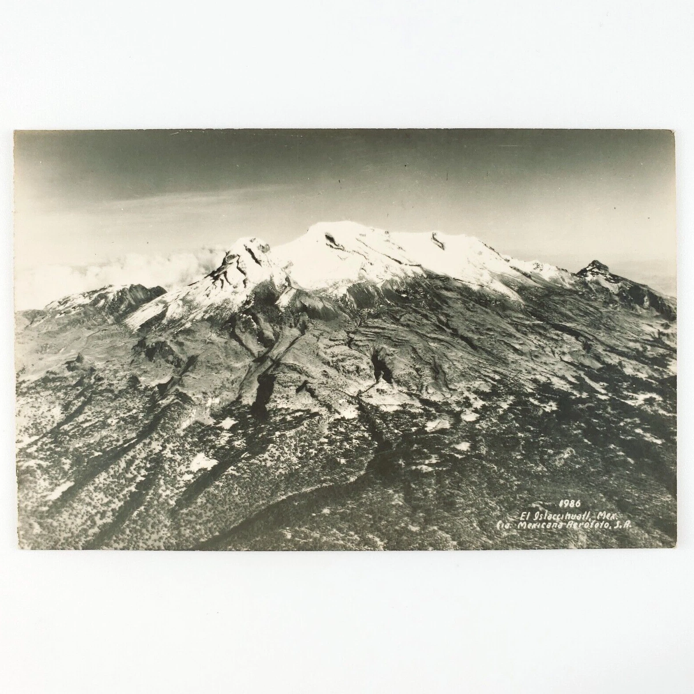
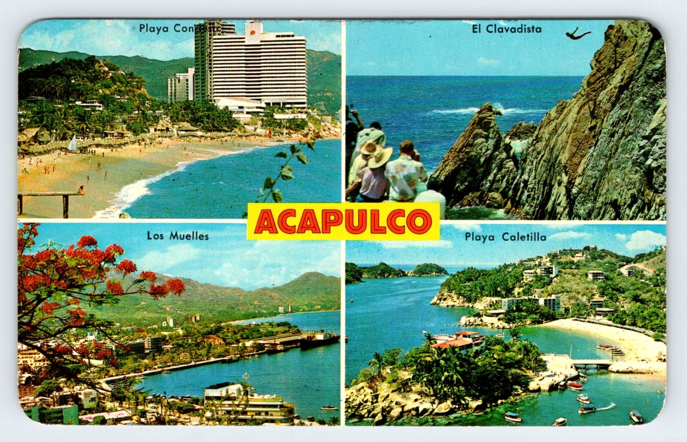

Chapter 4
The First Border
1953
I was eighteen years old when I left the country for the first time. Not by plane but overland, by bus.
The idea of going to Mexico had a concrete reason: my uncle Alberto, my mother's brother, had lived there for many years. At that time there was also a man in San Salvador who organized excursions to different countries. He handled the transportation and the itinerary. You signed up and got on board.
We left on a bus with about thirty people, all Salvadorans who didn't know each other. A varied group of different ages and different stories.
Our first stop was Veracruz. There we unexpectedly found ourselves in the middle of the Carrera Panamericana. In the streets there were racing cars, and among them was Juan Manuel Fangio's car. It was a complete surprise. Years later I confirmed that this was in 1953, in the last edition of that race.
From Veracruz we took the train to Mexico City. It was enormous, noisy, and full of life — very different from San Salvador.
I stayed at Uncle Alberto's house, in the Colonia Roma Norte neighborhood. He had just gotten married and was on his honeymoon, but his house was available for me.
Through Salvadoran acquaintances in Mexico, I connected with a group of young people who showed me the city: museums, plazas, nightlife, mariachis. I also visited the pyramids of Teotihuacán.
The most memorable adventure was climbing Iztaccíhuatl. We climbed at night along trails, spent part of the night in a rustic cabin with wooden beds and adobe walls, and continued up to the snow zone. When I reached the snow it was the first time I had seen it in my life. A great adventure.

With that same group we went to Acapulco by bus. There something incredible happened: walking along the malecón, I spotted Uncle Alberto boarding a tourist boat with his wife, in the middle of their honeymoon. We laughed a lot at the coincidence.

The trip lasted about ten days in total. On the way back, I ran out of money and had to depend on some of the ladies in the group to eat something on the return journey.
Years later I would return to Mexico for several months with my family, in a Citibank training program. But that was another chapter. In 1953, I returned to El Salvador with my head full of images and my pockets empty. Shortly after I began my university career.